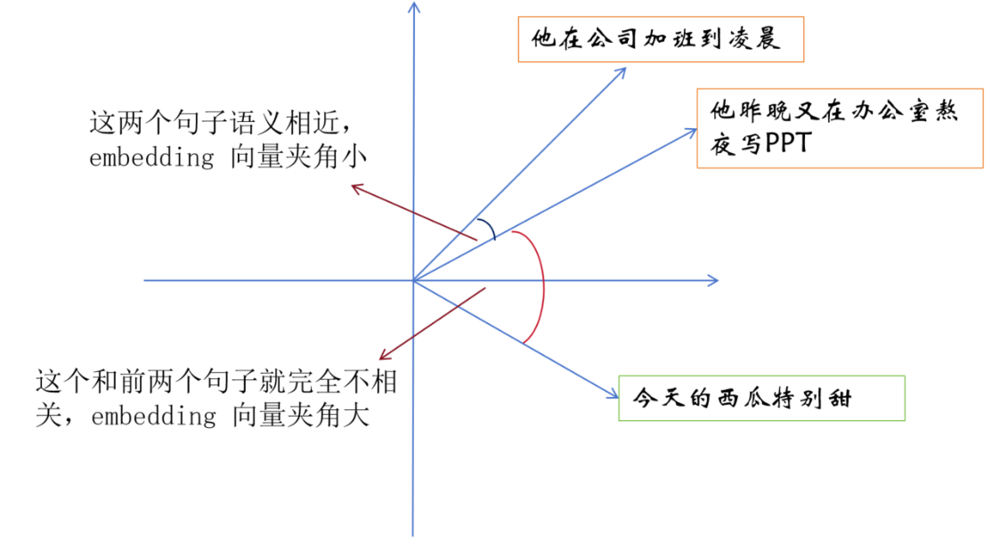
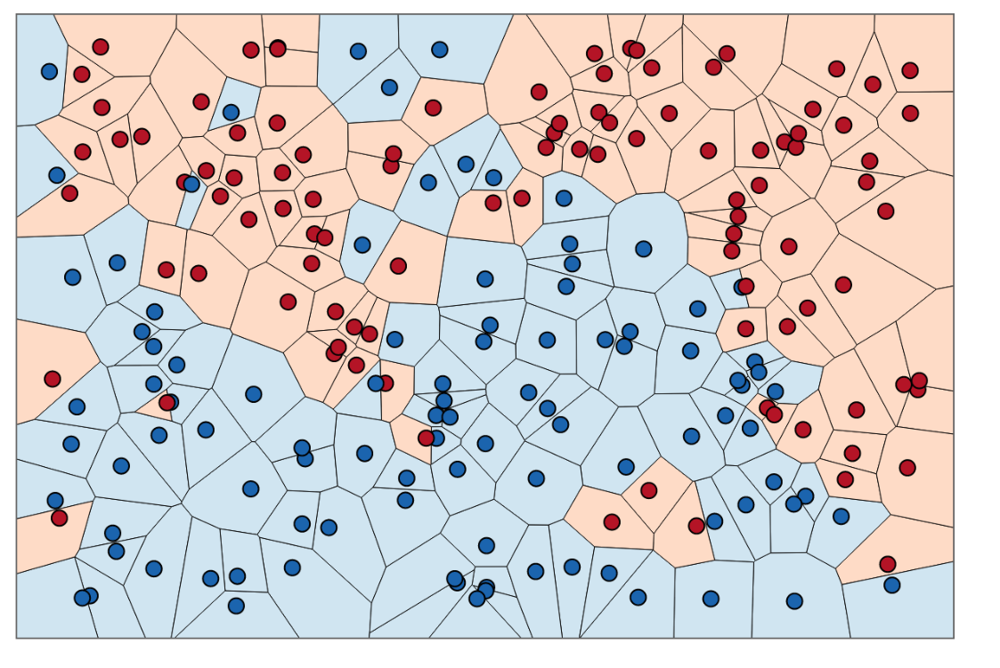

向量数据库
在 RAG 系统中，向量数据库（Vector Database）是整个检索模块的核心组件之一。它负责存储文本、图像或其他数据经过 Embedding 模型转换后的向量表示，并在用户查询时快速找到与查询向量最相似的数据。可以说，向量数据库决定了 RAG 系统的检索效率与召回质量，是构建高性能知识库系统的关键基础设施。
传统数据库通常用于存储结构化数据，例如表格、字段和索引，而向量数据库则专门用于处理高维向量数据。在大模型应用中，这些向量通常来自文本 Embedding，例如文档片段、知识库内容或用户问题的语义表示。当用户提出问题时，系统会将问题转换为向量，然后在向量数据库中寻找语义最相似的内容，从而实现语义级检索。
向量检索原理
向量检索的核心思想是：通过向量空间中的距离或相似度来判断语义相关性。在 Embedding 模型的帮助下，每一段文本都会被映射到一个高维向量空间中。语义相似的文本在向量空间中的位置会更加接近，而语义差异较大的文本则会距离更远。

当用户输入一个问题时，系统会首先计算该问题的向量表示，然后在数据库中查找与该向量距离最近的若干个向量，这个过程被称为 Nearest Neighbor Search（最近邻搜索）。常见的相似度计算方式包括：
-
Cosine Similarity（余弦相似度） 通过计算两个向量夹角的余弦值来衡量相似度，是文本语义检索中最常见的方法。
-
Inner Product（向量内积）
通过向量点积计算相似度，在某些 Embedding 模型中表现较好。
- Euclidean Distance（欧氏距离）
计算向量之间的几何距离，常用于数学或物理空间中的距离计算。在数据规模较小时，可以通过暴力搜索（Brute Force）计算所有向量的距离并找到最近邻。但在实际应用中，向量数据库通常需要处理数百万甚至数十亿级向量数据，因此必须使用更加高效的检索算法。
ANN（Approximate Nearest Neighbor）
为了在大规模数据中实现快速检索，向量数据库通常采用 ANN（Approximate Nearest Neighbor，近似最近邻搜索）算法。

ANN 的核心思想是：在保证较高检索准确率的前提下，通过一定的近似策略减少计算量，从而显著提升搜索速度。相比精确搜索，ANN 不一定能够找到绝对最相似的向量，但可以在极短时间内找到“足够相似”的结果，这对于大规模检索系统来说是完全可接受的。
在实际应用中，ANN 算法通常需要在以下三个指标之间进行权衡：
- Recall（召回率）：检索结果的准确程度
-
-
Latency（延迟）：查询所需的时间
-
Memory Usage（内存占用）：索引结构所需的存储空间
不同的 ANN 算法在这些指标之间会有不同的取舍，因此在实际系统设计中，需要根据数据规模和应用需求选择合适的索引结构。
HNSW / IVF
在众多 ANN 算法中，HNSW 和 IVF 是目前向量数据库中最常见的两种索引结构。
HNSW（Hierarchical Navigable Small World） 是一种基于图结构的向量索引算法。它通过构建多层图结构来组织向量数据，每一层图都包含不同数量的节点，并通过边连接相似向量。在搜索过程中，系统会从高层图开始逐步向下搜索，从而快速定位到目标向量附近的区域。这种方法能够在保持较高召回率的同时实现极快的搜索速度，因此在许多向量数据库中被广泛使用。
相比之下，IVF（Inverted File Index） 是一种基于聚类的索引方法。它首先使用聚类算法（例如 KMeans）将所有向量划分为多个簇，每个簇都有一个中心向量。在查询时，系统会先找到与查询向量最接近的几个簇，然后只在这些簇中进行搜索，从而减少计算量。这种方法在处理超大规模数据集时具有更好的扩展性。
从工程实践角度来看：
-
HNSW 通常具有更高的检索精度和较好的查询速度
-
IVF 更适合处理规模极大的向量数据集
因此，在很多向量数据库中，开发者可以根据业务需求选择不同的索引策略。
常见向量数据库
随着 RAG 技术的发展，市场上出现了多种专门用于向量检索的数据库系统。这些系统在架构设计、性能优化以及部署方式上各有特点。
Milvus 是目前最流行的开源向量数据库之一，由 Zilliz 团队开发。它专门为大规模向量数据设计，支持多种 ANN 索引结构，例如 HNSW、IVF、PQ 等。Milvus 采用分布式架构，可以轻松扩展到数十亿级向量规模，因此在企业级 AI 应用中被广泛使用。
Pinecone 是一个云原生向量数据库服务。与传统数据库不同，Pinecone 以托管服务的形式提供向量存储与检索能力，开发者无需自行维护基础设施，只需要通过 API 即可完成数据存储和向量搜索。这种方式大大降低了系统部署和运维成本，因此在 SaaS 型 AI 应用中非常流行。
Weaviate 是另一个开源向量数据库，它不仅支持向量检索，还内置了丰富的数据结构和 API，例如 GraphQL 查询接口以及模块化的 AI 插件。Weaviate 的特点是可以直接与 Embedding 模型集成，使得数据向量化与检索流程更加简洁。
FAISS（Facebook AI Similarity Search）是由 Meta AI 开源的向量相似度搜索库。虽然它严格来说并不是一个完整的数据库系统，但由于其极高的性能和灵活的索引实现，FAISS 被广泛应用于各种向量检索系统中，许多向量数据库内部也使用 FAISS 作为底层检索引擎。
向量数据库在 RAG 系统中的角色
在 RAG 系统中，向量数据库的主要职责是高效地完成语义检索任务。当知识库中的文档经过分块和向量化处理之后，所有向量都会被存储在数据库中，并建立相应的索引结构。当用户提出问题时，系统会将问题向量与数据库中的向量进行相似度搜索，从而找到最相关的文档片段。
因此，向量数据库不仅影响检索速度，还会直接影响系统的回答质量。如果检索结果不准确，即使大语言模型能力再强，也很难生成正确答案。
在实际系统设计中，开发者通常需要关注以下几个关键因素：
-
向量维度与存储规模
-
检索延迟与系统吞吐量
-
索引结构与召回率
-
数据更新与实时性
通过合理选择向量数据库与索引策略，可以显著提升 RAG 系统的整体性能。